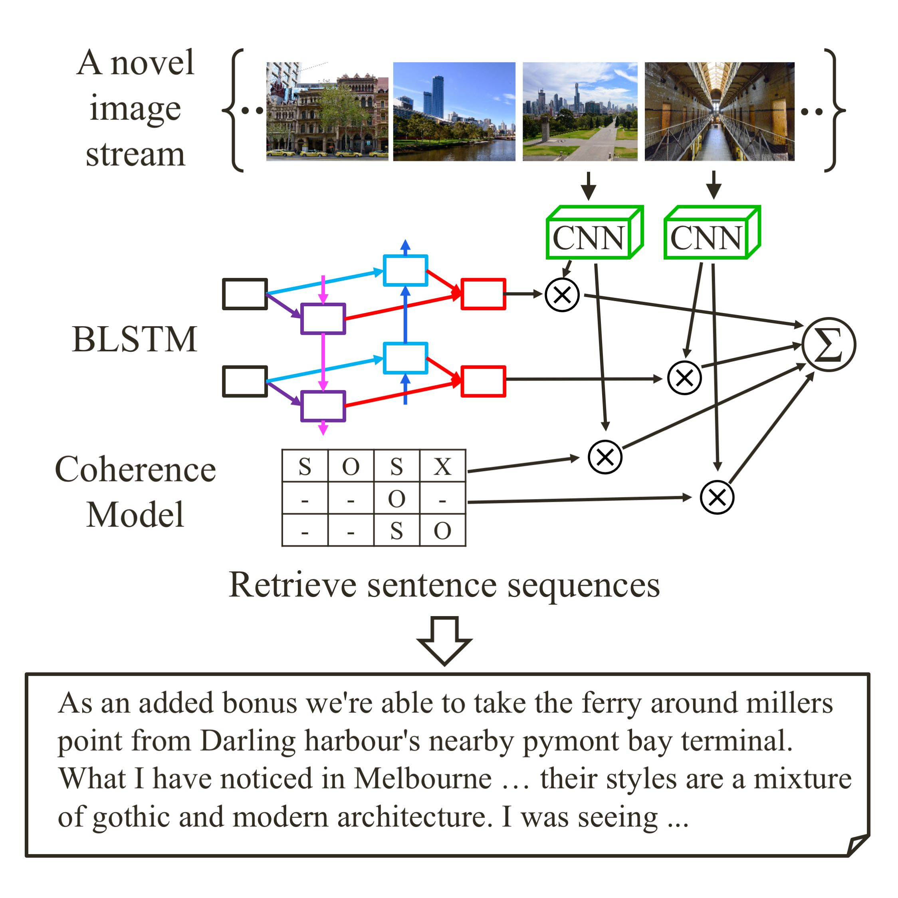

I worked with Gunhee Kim on Computer vision and Deep learning.
Spring 2015
Sungkyunkwan University: Bachelor's Degree
(Summa Cum Laude)
Major in Software.
Winter 2014
SAMSUNG Internship
Software Center AI Lab.
The Beginning (2012)
I'm interested in computer vision.natural language processing.deep learning.
Publications.

Retrieval of Sentence Sequences for an Image Stream via Coherence Recurrent Convolutional Networks
We propose an approach for retrieving a sequence of natural sentences for an image stream. Since general users often take a series of pictures on their experiences, much online visual information exists in the form of image streams, for which it would better take into consideration of the whole image stream to produce natural language descriptions. While almost all previous studies have dealt with the relation between a single image and a single natural sentence, our work extends both input and output dimension to a sequence of images and a sequence of sentences. Our approach directly learns from vast user-generated resource of blog posts as text-image parallel training data. We collect more than 22K unique blog posts with 170K associated images for the travel topics of NYC, Disneyland, Australia, and Hawaii.
Attend to You: Personalized Image Captioning with Context Sequence Memory Networks
We address personalization issues of image captioning, which have not been discussed yet in previous research. For a query image, we aim to generate a descriptive sentence, accounting for prior knowledge such as the user's active vocabularies in previous documents. As applications of personalized image captioning, we tackle two post automation tasks: hashtag prediction and post generation, on our newly collected Instagram dataset, consisting of 1.1M posts from 6.3K users. We propose a novel captioning model named Context Sequence Memory Network (CSMN).
Expressing an Image Stream with a Sequence of Natural Sentences
We propose an approach for generating a sequence of natural sentences for an image stream. Since general users usually take a series of pictures on their special moments, much online visual information exists in the form of image streams, for which it would better take into consideration of the whole set to generate natural language descriptions. While almost all previous studies have dealt with the relation between a single image and a single natural sentence, our work extends both input and output dimension to a sequence of images and a sequence of sentences. To this end, we design a novel architecture called coherent recurrent convolutional network (CRCN), which consists of convolutional networks, bidirectional recurrent networks, and entity-based local coherence model. Our approach directly learns from vast user-generated resource of blog posts as text-image parallel training data. We demonstrate that our approach outperforms other state-of-the-art candidate methods, using both quantitative measures (e.g. BLEU and top-K recall) and user studies via Amazon Mechanical Turk.